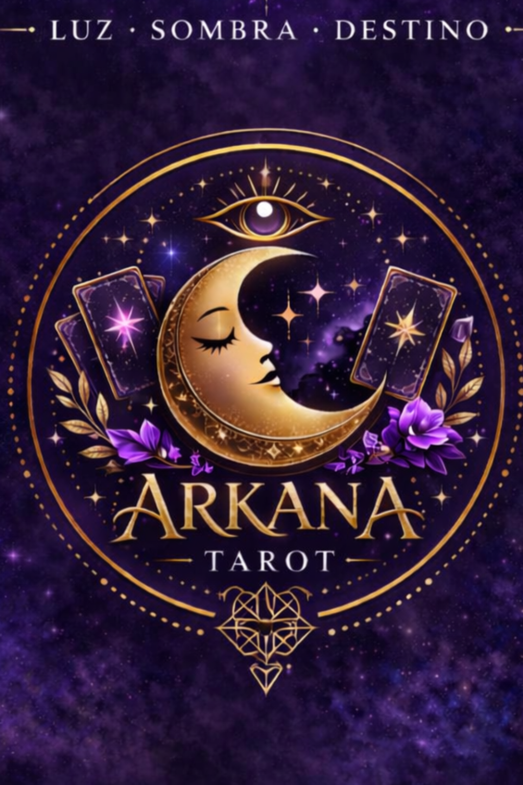

Carta del Día
Descubre la energía que se abre hoy para ti.


Tarot introspectivo y transformacional enfocado en claridad, procesos y decisiones conscientes.
Agendar sesiónEn Arkana trabajamos el tarot como herramienta de comprensión profunda. Analizamos energías activas, patrones y escenarios posibles según tus decisiones. Cada sesión es un espacio de exploración consciente y acompañamiento profesional.
Descubre la energía que se abre hoy para ti.
Lectura puntual para claridad inmediata sobre una situación específica.
Lectura profunda para procesos, decisiones importantes y análisis completo de escenarios.
Extensión de sesión para profundizar en puntos clave que requieran mayor exploración.